文字
背景
行間


カテゴリ:佐倉アクティブ
 SSH講座「マイ分光器を作って光源の性質を調べよう」
SSH講座「マイ分光器を作って光源の性質を調べよう」
令和５年１２月１２日（火）NPO法人科学技術振興のための教育改革支援計画から慶應義塾大学名誉教授 佐々田博之先生をお招きして、SSH講座が開催され、理数科１年生が参加しました。
講座では、光の波動性と波の性質（回折）、分光器の仕組みの講義を受けた後、工作用紙と回折格子を用いて分光器を自作しました。その後、作製した分光器を用いて、蛍光灯、白熱電球、ネオンランプをはじめ、アルゴン、窒素、水素、酸素などのスペクトル光源の観察を行いました。蛍光灯の観察では、水銀が使用されているものとそうでないものの違いなども確認できました。
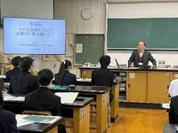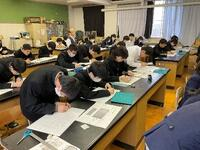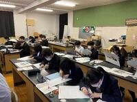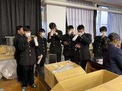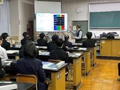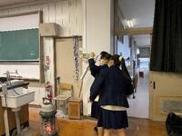
 佐倉アクティブ「多面体の数学的性質とゾムツールを用いた多面体作成実習」第2回
佐倉アクティブ「多面体の数学的性質とゾムツールを用いた多面体作成実習」第2回
佐倉アクティブ「多面体の数学的性質とゾムツールを用いた多面体作成実習」第2回が開講されました。
第1回に続き、東邦大学理学部情報科学科教授の並木誠先生に講師をしていただきました。
1、2年生対象で11月25日(土)に東邦大学で開講され、普通科2名、理数科4名の計6名が参加しました。
ゾムツールとは、棒状のパーツと球状のパーツを組み合わせて立体物を構築する玩具のことです。
キャンパス内を散策し、校舎内ではPC教室や自習スペースを見学させてもらいながら講義教室へ向かいました。
講座前半はまずゾムツールを使って4次元立方体(超立方体)の作成実習を行いました。
0次元からだんだん次元を上げていき、紙に書いた3次元立方体のように、
3次元に投影した4次元の立方体を2通り完成させることができました。
次に、ひし形多面体の作成実習を行いました。
ひし形六面体とひし形十二面体は各自で完成させ、
その後2人1組で協力して、ひし形二十面体とひし形三十面体を完成させました。
講座後半は半正多面体の作成実習を行いました。
半正多面体とは、面が2種類以上の正多角形からなり、どの頂点も同じ形をしている多面体のことです。
正三角形と正五角形の組み合わせで辺が60本の半正多面体や、
正方形と正六角形と正十角形の組み合わせで辺が180本の半正多面体など、
複数人で協力して複雑な半正多面体を作成することができました。
ゾムツールでは作成不可能な半正多面体も存在し、それらはGEOMAGという玩具を使って作成しました。
最後に、今後学校や家でチャレンジするための問題を与えられ、講座が終了しました。
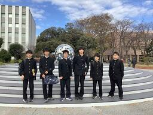 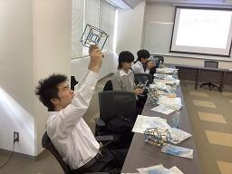
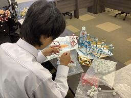 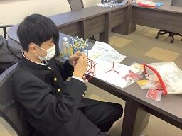
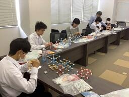 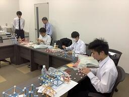
「ゾムツール(立体図形)講座」第1回の様子は以下のリンクからご覧ください。
https://cms2.chiba-c.ed.jp/sakura-h/blogs/blog_entries/view/47/3cce39ead66dfe68cf0c008a8d0a5c18?frame_id=212
 佐倉アクティブ「多面体の数学的性質とゾムツールを用いた多面体作成実習」第1回
佐倉アクティブ「多面体の数学的性質とゾムツールを用いた多面体作成実習」第1回
佐倉アクティブ「多面体の数学的性質とゾムツールを用いた多面体作成実習」第1回が開講されました。
東邦大学理学部情報科学科教授の並木誠先生に講師をしていただきました。
1、2年生対象で11月18日(土)に本校多目的室2で開講され、普通科2名、理数科5名の計7名が参加しました。
ゾムツールとは、棒状のパーツと球状のパーツを組み合わせて立体物を構築する玩具のことです。
前半は多面体の数学的性質と展開図に関する講義を受けました。
ひし形だけでできた多面体や、四角形・六角形・八角形の組合せでできた多面体などの存在には驚きましたが、
さらにそれらの多面体の展開図は頭の中では想像しきれない難しいものでした。
多面体から展開図を作るための条件や、展開図に関する未解決問題についても考えさせられました。
その後、回転する多面体の作成実習を行いました。
展開図が描かれた紙を切り貼りしていくと、ある文字列ができあがるように永久に回転させられる立体図形が完成しました。
後半はゾムツールを使って多面体の数学的性質について考察しました。
次週行われる講座第2回の準備のために、基本的な多角形や多面体を作成し、
正多面体を切断したときの断面の形状や、
オイラーの多面体定理が成り立っていることを確認しました。
「多面体の数学的性質とゾムツールを用いた多面体作成実習」第2回は11月25日(土)に東邦大学で開講される予定です。
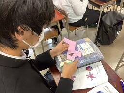 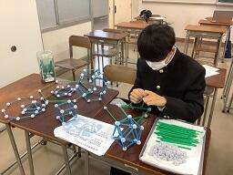
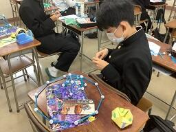 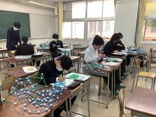
佐倉アクティブ一覧は以下のリンクからご覧ください。
 佐倉アクティブ「科学分析で過去を探る」
佐倉アクティブ「科学分析で過去を探る」
８月２日(水)，３日(木)に佐倉アクティブ「科学分析で過去を探る」が行われました。
この講座は、大学共同利用機関法人 人間文化研究機構 国立歴史民俗博物館との連携により実施しました。国立歴史民俗博物館は佐倉市にあって本校からも近く、歴史好きにはおなじみの施設ですが、今回のテーマは「科学分析」。講座の前は、「歴史」と「科学」の結び付きがピンとこない生徒もいたようです。
初日は、国立歴史民俗博物館教授 坂本 稔先生に来校いただき、放射性年代測定や年輪年代学についてのレクチャーを受けました。炭素１４年代については高校の化学や地学でも学びますが、炭素１４は宇宙からやってくる宇宙線のはたらきでつくられ、大気中の濃度には変動があります。そのため補正（暦年較正）が必要であり、年輪年代測定のデータと比較することが欠かせないことを知りました。また、その補正に、2013年から日本（福井県水月湖）のデータが使われていることも知りました。
２日目は博物館を訪問し、バックヤードで電子顕微鏡や赤外線を用いた分析装置などを見学しました。また、年代実験室で多くの古い木材を前に、国立歴史民俗博物館准教授 箱﨑 真隆先生に御説明をいただきました。ここで特に驚いたのは「炭素１４スパイクマッチ法」という、年代測定方法についてです。樹木年輪の研究によって、西暦775年に平年の２０倍もの急激な炭素１４の上昇があることが発見され、様々な地域の樹木で775年の年輪が特定できるようになったことを知りました。この方法によって、火砕流に埋もれた樹木から噴火の正確な発生年がわかるなど、たくさんの新たな知見がもたらされました。さらに、この急激な炭素１４は太陽のスーパーフレアが原因と考えられ、宇宙からやってくる災害に備える意味でも、重要なデータになるのだそうです。
生徒からは、「全く関係のなさそうな二つの物事が意外なところでつながっているのではないかと考えることは今後の探究活動にも大きく生きるものだと思った」、「歴史という研究対象でも文系的なアプローチと理系的なアプローチの両方を行うことで多くの発見をしてより深い理解ができていることを実感できた」といった感想がありました。佐倉市に最先端の研究機関があることを改めて知った２日間となりました。今後も、国立歴史民俗博物館と連携し、文理横断（文理融合）的な観点から、視野を広げたり、思考を深めたりしていきたいと考えています。
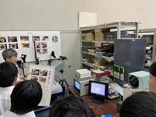 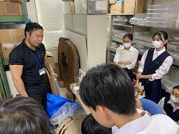
佐倉アクティブ一覧は以下のリンクからご覧ください。
 SSH特別講座「気付く・探る・考える」
SSH特別講座「気付く・探る・考える」
今年度は、
千葉工業大学惑星探査研究センター副所長 和田浩二 先生
(https://www.perc.it-chiba.ac.jp/members/k-wada/)
をお招きし、火星衛星探査計画「MMX」に関する講義をいただきました。
2024年９月打ち上げ予定です。
火星衛星フォボスは、はやぶさ２が往復したリュウグウなどの小惑星と表面が黒いことが共通していることから、火星に接近した小惑星が重力に捕まって衛星になったと考えられています(捕獲説)。
一方、フォボスとダイモスが火星の赤道面を円軌道で、火星の自転と同じ向きに公転していることから、火星に大きな天体が衝突して破片が宇宙空間にばらまかれ、この破片が集まって衛星になったとも考えられます(天体衝突説)。
どちらの説が正しいのか、持ち帰った火星衛星の岩石を調べることで明らかにし、地球型惑星の形成過程に迫ろうとしています。
和田先生からは、はやぶさ２が行った、弾丸をリュウグウに衝突させて人工クレーターをつくる話など、宇宙探査に関する最先端のお話をお聞きしました。
講義後は活発な質疑応答が行われ、充実した時間となりました。
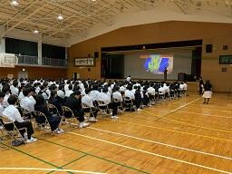 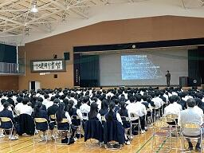
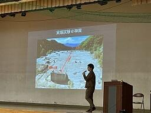

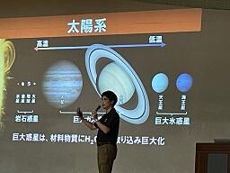 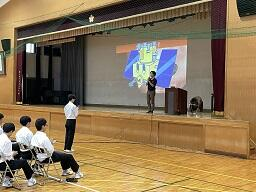
 佐倉サイエンス特別講義「課題研究のテーマ設定と研究の進め方」
佐倉サイエンス特別講義「課題研究のテーマ設定と研究の進め方」
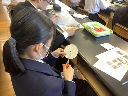 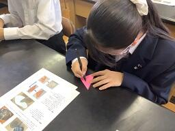
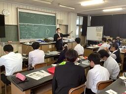 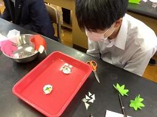
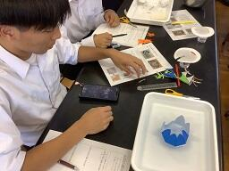 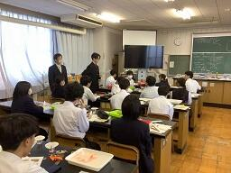
 佐倉アクティブ「データサイエンス入門」
佐倉アクティブ「データサイエンス入門」
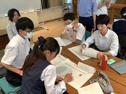 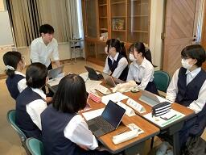 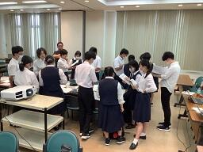 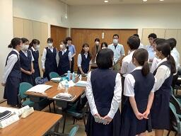 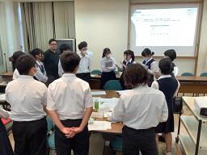 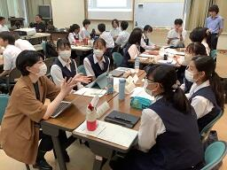 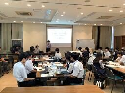 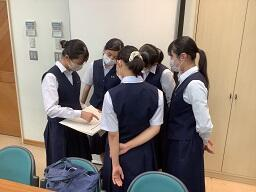
アクセンチュア株式会社については以下のリンクからご覧ください。
レスポンシブルカンパニー＆シチズン | アクセンチュア (accenture.com)
佐倉アクティブ「医療系分野について」
参加したのは1年生の普通科14名・理数科2名、2年生の普通科8名、計24名です。
看護師の仕事について学んだ後、ベッドで寝ている状態の患者さんの位置を動かすにはどうすれば良いか考える実習でした。
看護師の腰痛は大変問題になっており、看護師、患者さん(対象者)が互いに安全、安楽であることが求められるそうです。
マイクロピペットを普段使う機会がないため、生徒は扱いに戸惑っておりましたが熱心に取り組んでいました。
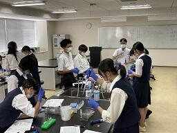 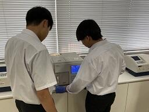
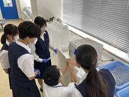
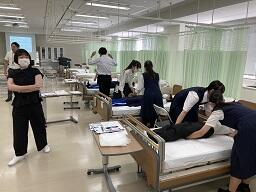
 SSHサイエンスツアー~内浦山野外実習~3日目
SSHサイエンスツアー~内浦山野外実習~3日目
千葉大学や地元漁協の許可を得て、研究用の海岸エリアへ入れていただきました。
午前から昼過ぎにかけて、岩礁水棲生物の観察、潮の満ち引きの仕組みの学習、岸壁の地層の観察などを行いました。
長い距離を歩き、山や崖を登り、とても体力を使うツアーでしたが、本や教科書を読んでいるだけでは味わえない体験や、様々な発見のある刺激的な3日間となりました。
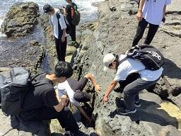 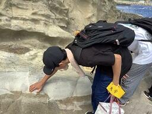
SSHサイエンスツアー~内浦山野外実習~2日目
午前は地学実習で、地層を観察し、触れて粒の大きさや質の違いを感じとり、スケッチの練習もしました。
昼食時には天候が崩れたこともあり、妙法生寺の住職さんのご厚意で、お寺の境内を利用させていただきました。
午後は生物実習で、葉の特徴の捉え方を学び、様々な葉を観察し、宿に戻ってから班ごとに教え合い学習を行いました。
後半は星座や惑星軌道について学習し、屋外に出て天体観測を行いました。
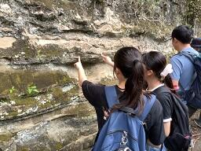 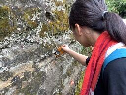
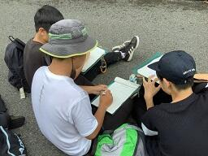
サイエンスツアー1日目の様子は以下のリンクからご覧ください。
https://cms2.chiba-c.ed.jp/sakura-h/blogs/blog_entries/view/47/8555f6d209664bb1da6a8e10b03e8e20?frame_id=212
SSHサイエンスツアー~内浦山野外実習~1日目
実施場所は鴨川市の内浦山県民の森で、参加しているのは1年生理数科36名・普通科6名の計42名です。
午前中に佐倉高校から内浦山県民の森まで移動し、到着後植物の観察をしながら歩いて、キャンプ場付近で昼食をとりました。
午後は斜面林に入り、班ごとにコドラートを作成して、樹木の座標や高さ、樹種などを確認する森林調査実習を行いました。
途中雨が降り紙に記録がとれないハプニングもありましたが、各班様々な工夫をして記録を残していました。
その後場所を移動し、急な斜面を登ってモミ遺存林を観察しに行きました。
宿に戻って夕食をとったあとは学習会で、午後の森林調査実習の結果を班ごとに模造紙にまとめました。
明日は地学実習と生物実習を行う予定です。
植物の成分を精製してみよう！
「植物の成分を精製してみよう！」をテーマに佐倉アクティブSSH講座が開催されました。
1年生18名(普通科11名、理数科7名)、2年生普通科2名の計20名が参加し、
実験実習、ハーブ園研修、施設見学を行いました。
カラムクロマトグラフィーによる樹脂精製を行いました。
4つの班に分かれ各班に一人、スタッフの方についていただき、
アドバイスをもらいながら実習を進めることができ、すべての班が無事にアントシアニンを抽出精製できました。
天然甘味料として知られ砂糖よりも低カロリーであるステビア、
料理や精油として利用されているバジルなどに触れたり、においや味を確認しながら研修しました。
原料から製品として出荷されるまでの一連の流れを説明していただきました。
午後の4時間ほどの講座でしたが、とても充実した講座になりました。
佐倉サイエンス特別講座
 佐倉アクティブ「月開発会議へようこそ」
佐倉アクティブ「月開発会議へようこそ」
参加したのは1・2学年の普通科15名、理数科1名の計16名です。
講師の方が全体の司会・進行を行い、それぞれのグループの意見に対して、
科学的に、文化的に、様々な視点から意見を出し合って、活発な議論が起こりました。
最初の段階で月開発に肯定的な生徒も、否定的な生徒もいましたが、
議論後の個々の意見まとめでは、他の生徒の説得力のあるプレゼンに影響されて変化しているものも多々ありました。

日本科学未来館のプログラムの詳細は以下のリンクからご覧ください。
https://www.miraikan.jst.go.jp/resources/provision/SpaceExploration/
SSH赤外線天文学講座
２年生６名、１年生９名の計１５名（普通科１１名、理数科４名）が参加しました。
講座では、講師に宇宙科学研究所 奥田治之 名誉教授をお迎えして、
「赤外線で探る宇宙：天の川銀河に巣くうモンスター（巨大ブラックホール）を追う」をテーマに
夜空を見上げた時に見られる美しい天の川の構造（天の川銀河の構造）やブラックホールの確認までの経緯、
ブラックホールの候補となり得る天体の条件などについて、
画像やデモンストレーションを交えながら講義していただきました。
SSH通信No.12
SSH通信No.12を発行しました。
内容はSSH箱根サイエンスツアー(1日目)についてです。
下の画像をクリックすると見ることができます。
ぜひご覧ください。
過去のSSH通信一覧は以下のリンクからご覧ください。
SSH通信No.12
SSH箱根サイエンスツアー(1日目)
12月21日(水)～22日(木)の2日間、理数科2年次の生徒が参加するSSH箱根サイエンスツアーが行われました。
このサイエンスツアーは、今年度は中止となったSSH理数科海外研修の代替の活動として実施したものです。
東京～箱根方面の各施設で、専門家の方々の説明を聞き、それぞれの研究分野の最前線を体験することにより，
科学への興味関心を高めることが目的です。
日本科学未来館の二手に分かれて見学を行いました。理研の見学ツアーの参加者はさらに二手に分かれ、
生命機能科学研究センターのNMR(核磁気共鳴)装置(写真1,2)または
クライオ電子顕微鏡(写真3)をそれぞれ間近でみることができました。
NMRは、強い磁場の中にある原子が電波をどのように吸収するか(スペクトル)を調べることで、
原子のつながりや分子の形を知る方法です。
クライオ電子顕微鏡法は、タンパク質溶液や細胞を急速凍結させることで電子顕微鏡での観察を可能にした方法で、
近年は画像処理により生体分子の三次元構造を原子レベルの解像度で知ることもできるようになっています。
これらの装置を用いて、発生・成熟・老化のような生命現象すべての解明を目指していることがよくわかりました。


写真1 写真2 写真3
計10班に分かれ、計算機・未来逆算・ニュートリノ・加速器・細胞・人間関係など、
各班のテーマのブースを体験しました。
自然とは何か、デジタルとアナログの違いは何か、それらは連続しているかを考えさせられたり(写真4)、
インターネットにおけるのデータ送信の仕組みを体験したり(写真5)、
たくさんの人間と関わる「社会」の中での人間の性質、人間関係の仕組みを学びました(写真6)。


写真4 写真5 写真6
1日目の午後はJAXA相模原キャンパスへ移動し、宇宙科学探査交流棟で展示解説ツアーに参加しました。
前日までの事前学習で学んだ小惑星探査機「はやぶさ」や小惑星「イトカワ」の解説を改めて聴き、
疑問点のある生徒たちがどんどん質問していき、小惑星探査に関する知識を深めていきました。
ロケットの燃料タンクの材質を体感し(写真8)、
館内の大きな壁に宇宙科学関連の映像を投影する「壁面シアター」も見ることが出来ました。


写真7 写真8 写真9
JAXAから箱根へ向かうバスの中ではブラタモリの箱根温泉や地形の歴史の回のビデオを見ました。
夕方には大観山展望台へ行き、日没時の富士山や芦ノ湖だけでなく、
外輪山やカルデラ、中央火口丘などの地形も観察しました(写真10,11,12)。
このとき気温は1℃しかなかったため、観察と写真撮影だけ行ってすぐバスに戻りました。


写真10 写真11 写真12
宿に着き夕食後、午前中の各班の調査結果報告会が行われました。
バス移動の時間や宿の自由時間を利用して、googleクラスルームで配信した課題レポートに
調査結果や感想、写真を載せて全員提出していたため、
その写真を投影しながら報告会を行うことでスムーズに進行しました。
短い準備時間でしたが、自主的に英語で発表する班もあり、クオリティの高い報告会となりました。
ツアー2日目については後日掲載します。
箱根サイエンスツアー事前学習の様子は以下のリンクからご覧ください。
https://cms2.chiba-c.ed.jp/sakura-h/blogs/blog_entries/view/47/2886ef58c4d7555da4d8e73bef88daf5?frame_id=212
SSH有機化学実験講座


 佐倉アクティブ「ゾムツール(立体図形)講座」第2回
佐倉アクティブ「ゾムツール(立体図形)講座」第2回
https://cms2.chiba-c.ed.jp/sakura-h/blogs/blog_entries/view/47/53e88d7f58d3b285714595d30d6bcd88?frame_id=212


佐倉サイエンス③
グラフに記入して近似曲線を描き、絶対零度を推測する実験をしました。


化学分野はシュウ酸水溶液に濃度不明の水酸化ナトリウム水溶液で中和滴定を行い、
水酸化ナトリウム水溶液の濃度を調べ、さらにその水酸化ナトリウム水溶液を利用して
クエン酸の分子量を測定する実験を行いました。


生物分野はスルメイカの和名の由来、学名、生態、持っている呼吸色素の色などを学習し、
さらにスルメイカの解剖実験を行いました。


地学分野は簡易日射計を用いて地表で受ける日射量を測定し、
季節や地球上の場所などの条件を変えたとき、得られるエネルギーがどれくらい変化するか、
宇宙へどれくらい反射しているかなどを考察しました。


数学分野は科学雑誌「Newton」の中で、数学の特集が組まれている冊子を集め、
生徒が興味のある分野について読み、文献調査の練習をしました。


サイエンス・ダイアログ講座第2回
サイエンス・ダイアログとは、日本学術振興会(JSPS)が実施している「外国人特別研究員事業」を活用し、
来日している外国人研究者(フェロー)を講師として招き、自身の研究や出身国に関する講義を
英語で行うことにより、科学への興味・関心を高めるとともに、国際理解を深めるというものです。
講師は東京大学農学生命科学研究科応用生命科学専攻土壌圏科学研究室の先生です。
参加生徒の事後アンケートには
「事前学習で専門用語を学んでいたのである程度理解できた。」
「聞き取れたとき、自分の知識と結びついたとき、とても嬉しかった。」
「土壌微生物学はおもしろいと思った。生物の学習意欲が高まった。」
などの意見がありました。
サイエンス・ダイアログについての詳細は以下のリンクから日本学術振興会のホームページでご覧ください。
https://www.jsps.go.jp/j-sdialogue/

 佐倉アクティブ「ゾムツール(立体図形)講座」
佐倉アクティブ「ゾムツール(立体図形)講座」
東邦大学理学部情報科学科教授の並木誠先生に講師をしていただきました。
1、2年生対象で11月19日(土)に本校多目的室2で開講され、普通科2名、理数科4名の計6名が参加しました。
ゾムツールとは、棒状のパーツと球状のパーツを組み合わせて立体物を構築する玩具のことです。
前半は多面体の数学的性質と展開図に関する講義を受けました。
ひし形だけでできた多面体や、四角形・六角形・八角形の組合せでできた多面体などの存在には驚きましたが、
さらにそれらの多面体の展開図は頭の中では想像しきれない難しいものでした。
多面体から展開図を作るための条件や、展開図に関する未解決問題についても考えさせられました。
その後、回転する多面体の作成実習を行いました。
展開図が描かれた紙を切り貼りしていくと、ある文字列ができあがるように永久に回転させられる立体図形が完成しました。
後半はゾムツールを使って多面体の数学的性質について考察しました。
次週行われる講座第2回の準備のために、基本的な多角形や多面体を作成し、
正多面体を切断したときの断面の形状や、
オイラーの多面体定理が成り立っていることを確認しました。
「ゾムツール(立体図形)講座」第2回は11月26日(土)に東邦大学で開講される予定です。
SSH通信No.9
SSH通信No.9を発行しました。
内容はSSH講座「気付く・探る・考える」と伊豆大島徹底Fieldworkについてです。
ぜひご覧ください。
過去のSSH通信一覧は以下のリンクからご覧ください。
SSH通信No.9
佐倉アクティブ「チバニアンってなんだ？」事前学習
11月5日(土)に1年生普通科2名、理数科5名、計7名は養老渓谷周辺でフィールドワークを実施予定です。
10月24日(月)の放課後にフィールドワークを行うための事前学習会を行いました。
まずフィールドワークに行くための準備や、チバニアンに関する基礎知識を仕入れるための講義が行われました。
フィールドワークをするエリアは天然記念物に指定されており、採掘することができないため、
石などに触れて指先の感覚だけで砂岩か泥岩かを判別できるように、各自紙やすりを使って粒度表を作成しました。
その後、銚子方面でとれた石に触れ、粒度表と比較して石がどの種類に属しているのか判別し、
その石がとれた地域の特徴について分析をしました。
この講座に参加する生徒は全員SSH国内サイエンスツアー(内浦山野外実習)にも参加しており、
フィールドワークや千葉県の地層に興味を持った生徒たちが集まっています。
つくば市内研究施設訪問研修
午前は高エネルギー加速器研究機構を訪問し、光速に近いところまで電子を加速させエネルギーを取り出す実験施設や、宇宙誕生の謎を解明するための実験施設の見学を行いました。また、参加生徒全員で協力して空から降ってきている素粒子の通り道を観測やデータの集計も行いました。
物理・化学コースの生徒は物質・材料研究機構を訪問し、様々な新素材を見せてもらい、銀やチタン、タングステンなどの１０種類の金属を、生徒たちの知識と感覚を頼りに判別しました。
ＳＳＨ通信のNo.2にも今回の内容を載せますので、詳しくはそちらをご覧ください。
SSH講座「宇宙に生命の起源を探る」
令和4年2月8日㈫、NPO法人科学技術振興のための教育改革支援計画から横浜国立大学名誉教授 小林憲正先生をお招きして、ＳＳＨ講座が開催され、理数科２年生が参加しました。講座では、「宇宙に生命の起源を探る」をテーマに宇宙生物学（アストロバイオロジー）の立場から「私たち（地球人）は、どのようにして誕生したのか？」、「地球以外にも生物はいるのか？」、「私たちは、この先どうなるのか？」について考えました。その中で、地球における生命の起源の解明をアミノ酸のような生体分子がどのようにして誕生したかを探る方法やさまざまな模擬実験や隕石の分析から得られているアミノ酸の生成に関する知見も学びました。また、分子模型でアミノ酸の鏡像異性体（エナンチオマー）の関係や円偏光板によるコガネムシの翅の観察をしました。
SSH国内サイエンスツアー第２日
9時00分に宿を出発し、斜面林での森林調査（植生調査）に向かいました。コドラード法により、各班で選んだ斜面に区画を設置し、区画内側の植物を座標で記録し、樹高を測定、樹冠投影図作成、胸高直径の計測、樹種の同定などを行い植生断面図にまとめました。その後、奥谷林道ハイキングコースで植物分類実習を行いました。１泊２日の研修でしたが、天候にも恵まれ、感染症対策も十分に行なわれ、大変有意義な研修でした。
SSH講座「チバニアンってなんだ？」
８月６日（金）ＳＳＨ講座「チバニアンってなんだ！」の一環で、市原市養老川流域を中心とした巡検に行ってきました。１年生６名、２年生９名が参加し、コロナ感染対策を徹底しつつ、現地で地層を確認しながら、そこに刻まれた地球環境の変遷について意欲的に学ぶことができました。また、ハンマー片手に化石採集をした際、見つけた物について担当教員に熱心に質問する姿は、旺盛な好奇心に溢れていました。現地を歩くことによって地形の起伏も体感でき、実り多い巡検となりました。
令和３年度 SSH講座 ㈱常磐植物化学研究所講座
第３回 SSH徹底探究基礎講座
11月29日(日)船橋高校にて、SSH徹底探究基礎講座「色と濃度の関係の研究」、「画像解析ソフトを用いた天文実習」、「簡易分光器の制作と光の観察」、「水質とその調査方法について」４講座同時展開で講座が実施されました。佐倉、船橋、柏、長生、木更津、市立千葉高校が参加しており、みな協力しあって課題を解決していました。
SSH東邦大学講座「似て非なる物質の不思議」
令和２年１１月１９日（木）、東邦大学理学部化学科から桑原俊介先生をお招きして、ＳＳＨ東邦大学講座が開催され、理数科１年生３９名が参加しました。講座では、柑橘類に含まれ、発泡スチロールを溶かすことでも知られている「リモネン」を題材に「似て非なる物質の不思議」というテーマで旋光性や鏡像異性体についての講義と、「簡易旋光度測定器」を作製し、キラルな分子である「リモネン」２種類とキラルでない分子である「クロロホルム」の旋光角を測定し、比旋光度を求めました。
徹底 Field Work 講座

徹底探究講座 「徹底探究スタート講座」
徹底探究講座『社会・学術への貢献』
８月１０日(月)千葉県立船橋高等学校にて、スキルアッププログラム 徹底探究講座「社会・学術への貢献」が実施されました。参加生徒はSSHコンソーシアム千葉２年次参加生です。午前は、カードゲームを通し、SDGs〜持続可能な開発目標〜について考えました。午後は、学術への貢献を意識した研究の条件(意義・新規性・実現可能性)を学び、今後自分自身の課題研究で意識してくれると思います。
徹底探究基礎講座①
8月2日(日)第1回徹底探究基礎講座高大接続スタート講座がありました。コロナ禍ということもあり、船橋、柏、長生、木更津、市立千葉でオンラインによる同時開催という形で実施されました。本校からは16名が参加し、実験などを通し、研究を行う意義について学び、今後自らがどのように研究をしていくのか想像してもらえたと思います。
SSH講座（数学分野）
国内サイエンスツアー最終日
国内サイエンスツアー第２日
国内サイエンスツアー 第１日
クリスマスレクチャー「有機化学実験講座」
講座内容は、解熱鎮痛剤として使用されているアスピリン（アセチルサリチル酸）をサリチル酸から合成・精製し、合成したものがアスピリンであるかを融点測定や塩化鉄(Ⅲ)溶液による定性試験、三種類の機器分析（MS・IR・NMR）により同定しました。また、コンピュータ上での分子モデリングを行いました。大学の先生やＴＡの学生さんのサポートを受けながら、一人ですべての工程を行い、全員無事にアスピリンを合成できたことを確認することができました。
| 講義 | 合成実験 | 合成実験 |
| データ分析 | NMR実習 | データ分析 |
| 融点測定 | IR実習 | 分子モデリング実習 |
SSH講座「植物の成分を精製してみよう！」
実験実習では、甘草エキスからその主成分であるグリチルリチン酸の分離に加え、ブルーベーリーやクチナシの花びらから取り出した色の成分が液性によりどのように変化するのかも体験しました。
施設見学では、原料から製品となるまでの一連の流れや研究室での製品チェックの様子などを、わかりやすく説明していただきました。
ハーブ園では、ブルーベリー、クレソン、カレープラント、ライスイヤ、ステビア、サンショ、マロウ、クチナシ、ニッコウキスゲなどについて触れたり、においを確認したり、味をみたりしながら研修しました。最後に暑さを和らげるような冷たい特性ハーブティーも試飲しました。
午後の４時間ほどの講座でしたが、とても充実した講座になりました。
ＳＳＨ講座「チバニアンって何だろう？」を開催しました
集まった生徒は理数科・普通科を問わず100人あまり。まず，まだ地学を履修していない１年生向けに，３年生地学履修者からの研究発表が60分間行われ，チバニアンについての解説が笑いを交えて楽しく行われました。実はこのとき，大御所の岡田先生が後方でご覧になっており，３年生諸君はそれに気付いた瞬間さぞかし緊張のどん底を味わったことでしょう（笑）。そしてついに岡田 誠先生のご登場です。
講義は地質学の基礎から今をときめく「チバニアン」の最新事情まで，たいへん楽しい内容でした。科学大好き生徒たちは，軽妙に語られる地質学の魅力に惹き付けられ意気盛ん。例えば酸素同位体比率が語る水環境変動のお話はたいへん分かりやすく，なるほどそういうことか！と腑に落ちましたし，気候変動には短期的・長期的な視点があること，宇宙放射線と地磁気変動との関係，そしてチバニアンとはそもそも何なのかなど，新しいことを知るわくわくした楽しみを分かち合えた120分間でした。
講義後も白熱した質疑応答が30分以上続き，講義をよく聴いていないとわからない細かな質問が生徒たちから矢継ぎ早に飛び出しました。岡田先生はそれらにひとつひとつ丁寧にお答えくださり，そのお人柄と相俟って，科学の道を志す生徒たちの心に確かな火を灯してくださいました。
今後も，チバニアンの登録が叶いゴールデンスパイクが打ち込まれるその日まで，佐高生一同注目していきたいと思います。岡田 誠先生，有り難うございました。
SSH講座「加速器で迫る世界」
生活の中で利用されている化学と企業の開発の取り組み
平成２９年１２月１４日、本校に（株）DICから髙橋雅人様始め４名の研究者の方々をお招きしました。研究者の方々は、DICが行っている研究活動の一端を紹介しつつ、大学で行われている研究活動との目的や方向性の違いなどについて説明してくださいました。また、普段の生活や研究者を歩もうと思ったきっかけなどについても話してくださいました。進路選択を考え始めた生徒にとって、とてもタイミングの良い内容でした。
実験実習は、藻であるスピルリナからいろいろな溶媒を用いて色素を取り出す実験（そのうちの一つはガリガリ君の青色色素であるフィコシアニンでした）。もう一つは粘性を定量する簡易装置を用いて、ハチミツとマヨネーズの粘性の違いについて実習しました。操作を済ませたら終わりでなく自分達の実験結果から考察を発表するミニ研究体験でした。

遺伝子解析講座
平成２９年１２月９日（土）、東邦大学理学部にて、「遺伝子解析講座」が行われました。ＰＣＲ法を利用しての、筋肉の特性を調べる実験です。佐藤浩之教授による講義を受けた後、自分の頬の粘膜細胞から遺伝子を抽出して調べる実験とあって、各自真剣に取り組んでいました。自分がパワースプリントタイプか持久系タイプかその結果を確認し、それぞれの特性を学びながら、遺伝子解析を行う上での利点と問題点について、よく勉強していました。
DNAからかたち作りを考える ～細胞性粘菌～
平成２９年１１月１１日（土）、東邦大学理学部において「DNAからかたち作りを考える～細胞性粘菌～」をテーマにSSH講座が開催されました。１年生１０名、２年生１名の計１１名が参加し、細胞性粘菌を用いて遺伝情報から形質が発現するまでの一連の流れについて学びました。粘菌の一種であるキイロタマホコリカビの観察や、施設見学も行いました。
クリスマスレクチャー「有機化学実験講座」
平成２９年１２月２３日（土）、２４日（日）の２日間、東邦大学理学部においてクリスマスレクチャー「有機化学実験講座」が開催されました。
２年生１名、１年生１４名の計１５名（普通科９名、理数科６名）が参加し、解熱鎮痛剤として使用されている「アスピリン（アセチルサリチル酸）」を実際に合成・精製し、精製したものに対して融点測定や定性試験、質量分析、機器分析（MS・IR・NMR）、分子モデリングで同定を行いました。大学の先生やTAの学生さんのサポートを受けながら、一人ですべての工程を行い、全員無事にアスピリンを合成できたことを確認することができました。
| 講義 | 合成実験 | 合成実験 |
| データ分析 | 定性試験 | 融点測定 |
| 融点測定 | IR実習 | 分子モデリング実習 |
低温科学講座
１１月１４日（火）の午後、東邦大学理学部から西尾豊先生をお招きして、１年理数科（４０名）を対象に「低温科学講座」を実施しました。沸点が－１９６℃の液体窒素を用いての体験を伴う講義でした。液体窒素に実際に触れたり、液体窒素で空気や酸素を冷却し、液体状態の酸素の色や燃焼の様子、ネオジウム磁石との反応を確認したり、空気から炭酸固体（ドライアイス）を取り出したり、超電導物質を用いての超電導現象（マイスナー効果やピン止め効果）を実際に見たり触れたりしました。午後の短い時間でしたがとても内容が盛りだくさんの講座でした。
科学で探る ～地球のこと、宇宙のこと～
「KEK（高エネルギー加速器機構）」見学
午前は、ノーベル賞の小林・益川理論を実験的に証明するなど、多くのすばらしい成果を上げている加速器を中心に施設を見学しました。午後は、大学生・大学院生が全国から集まり実験・研究を行うイベント「サマーチャレンジ」を見学しました。
大学生から研究の内容や楽しさを話してもらったことで、生徒は研究を身近に感じることができたようです。

変化アサガオの不思議
仁田坂先生の爬虫類の単為生殖に関する研究のお話やアサガオの研究は自分がやるしかないと思った子供時代からのアサガオに対する熱意等を伺い，受講者は刺激を受けたようです。
SSH講座「植物の成分を精製してみよう！」
平成２９年７月２１日（金）の午後、佐倉市内の株式会社常磐植物化学研究所において「植物の成分を精製してみよう！」をテーマにSSH講座が開催されました。
１年生１６名、２年生２名の計１８名が参加し、甘草（カンゾウ）エキスから、その主成分である、グリチルリチン酸を分離し確認する実習、施設見学、ハーブ園研修を行いました。
グリチルリチン酸の分離実習では、TLCによる分離およびUVライト下での確認実習の他、4％ショ糖水溶液と0.4%グリチルリチン酸水溶液の甘味体験なども行いました。
ハーブ園研修では、園内で採れた数種類のハーブを使ったハーブティの試飲しながら、オタネニンジン、ウコン、エキナケア、クチナシ、ブルーベリーなどについての講義、園内見学中にはニッコウキスゲの花びらの試食も体験しました。

科学コミュニケーター体験講座
平成２８年８月４日に、お台場の日本科学未来館にて佐倉アクティブ「科学コミュニケーター体験講座」が開かれました。午前中は自由に館内の見学をしながら、科学コミュニケーターさんにインタビューするなど、科学コミュニケーションの方法や重要性に関して理解を深めていました。また、１０月３日の未来館での展示解説実習に向けて、展示物の情報収集をしっかりと行っていました。午後は、対話型ワークショップに参加し、エネルギーについてディスカッションを行いました。生徒が主婦や政治家、原発立地地域の住民等、それぞれの立場に立ち、与えられた多くのデータからどのような意見が言えるのか議論をしました。生徒たちは、自分たちの考えをしっかりと練り意見をぶつけながらも、他グループの声にもよく耳を傾け考えていました。最後には、「それぞれの立場の役になったことで、エネルギー問題を身近に感じ、自分の事として考えられるようになった。」「幸せの方向性が変わると見方が変わるが、正解はない。広い視野を持って考えることが大切。」と感想を述べていました。
国内サイエンスツアー
| 神流町恐竜センターにて この後化石発掘体験と恐竜の足跡見学 | 県立ぐんま天文台にて 国内最大級の反射式望遠鏡を見学 |
| 生憎の天候で望遠鏡観望はできなかったが、 簡易分光器を作成し、光の観察方法を学ぶ | |
鳩待峠から尾瀬ヶ原をグループごとに観察、夜はその成果をグループでまとめプレゼン | |
シーボルトが紹介した植物
平成２８年７月２３日に、国立歴史民俗博物館くらしの植物苑にて「シーボルトが紹介した植物」と題した講演会に参加し、オランダのライデン大学付属植物園から寄贈された植物などの観察も行いました。講演会では、シーボルトが来日していた当時の植物研究と文化を学びました。生徒からは「シーボルトが植物を調べるときに、生態や性質、見た目だけでなく、日本の文化やその植物の利用方法までも調べているところを知って驚いた。」「物事を多方面から見ることが大切だと感じた。」という感想を述べていました。
グローバル・サイエンス講座
平成２８年７月１５日の３、４時限を用いて、２年理数科の生徒を対象に科学英語に関する「グローバル・サイエンス講座」が開かれました。講師は、筑波大学国際統合睡眠医科学研究機構の Kristopher S.MCEOWN 先生で、ご専門の睡眠心理学の研究内容に加え、出身国のカナダや研究者になった動機などのお話も幅広くして下さいました。オールイングリッシュでの講演でしたが、生徒は興味深く耳を傾け、質疑応答の際には多くの生徒が積極的に質問をしていました。